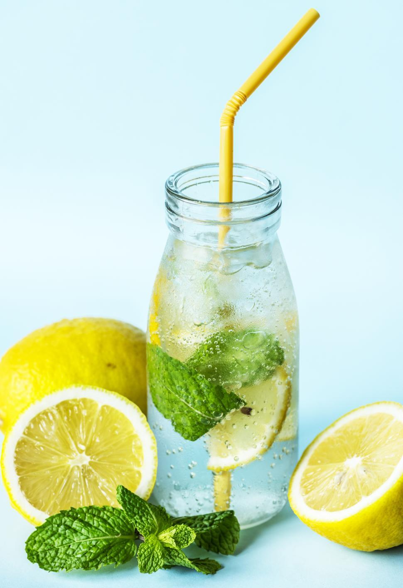

Too many lemons? Try this:
HOMEMADE LEMONADE
Link 1
Link 2
Link 3
Link 4

Public Domain.
Recipe by Jo, found on:
allrecipes.com
CONVERSION
=
RATE THIS RECIPE
What skill level is this recipe?
Easy
Intermediate
Hard
Ingredients
1 3/4 cups white sugar
1 cup water
9 lemons
7 cups ice-cold water
Equipment
Saucepan
Knife
Lemon Juicer (optional)
Directions
Combine sugar and the 1 cup water in the saucepan.
Boil the water, stirring to dissolve sugar.
Meanwhile, juice lemons into a measuring cup until you have 1 1/2 cups.
Pour 7 cups ice-cold water into a pitcher and stir in lemon juice.
Add sugar-water and ice to taste.
Enjoy!
Footer